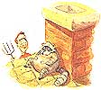

LAST LAUGH
How to deliver an eviction notice to a pesky raccoon.
Daddy, there's something scratching on my ceiling!" my seven-year-old daughter called from her bedroom.
I heard rodentlike digging and four-footed patter. Some kind of animal was in our attic. Squirrel, I figured, or maybe a raccoon. Since it was late, I took the easy way out and tapped the ceiling with a broom handle. We both listened to scurrying sounds toward the wall that the chimney ran through.
The next day I climbed on the roof to look for an entry point. The chimney was the only possibility. One of the three flues, I discovered, did not vent the furnace or fireplace. Instead it only went down about three feet and had a screened hole on the attic side.
The screen was torn, forming a critter revolving door. Well, I determined to fix that. I got pieces of wood, half bricks, and other debris to fill up the hole and block access to the vent without cutting off circulation to the attic.
Then I went to talk to my neighbor Kyle-92 years old, spry as a cricket and a voice like the late W .C. Fields.
"Sounds like you got a raccoon problem, sonny," he allowed. "Probably the same one that's been messing with my garbage cans. Let's trap that potlikker."
For the next three weeks we set a livetrap out in the yard. No luck. Every morning we found the trap wide open. The bait gone. Plenty of footprints. No raccoon.
Kyle had an idea. "I heard that raccoons like sardines."
It seemed that other animals are partial to sardines as well. The bait disappeared four nights in a row. One morning we found a possum in the trap. Two days later, it was the neighbor's cat licking her paws in the galvanized cage.
"I got another idea," Kyle offered.
The next day I followed an offensive odor to the space between our houses and a 50-gallon drum.
"Chicken;" Kyle snapped with authority.
"Raccoons like chicken. I put some in the bottom of the barrel. When he gets so hungry he's got to have some. He'll drop into the barrel and won't be able to get out. Ha!"
Needless to say the chicken decomposed in place.
"Daddy," my daughter complained one night. "There's that scratching in the ceiling again."
I went up on the roof the next morning and looked down the false flue. My rubble barricade was pushed aside and the screen hung free once again. Perturbed, I plotted to pile enough rubble down that flue to stop a bulldozer. Then it occurred to me, what if he's still inside? I don't want to turn my attic into a raccoon mausoleum. The scratching might eventually stop, but the smell might not. I had to be sure the critter was out before I sealed the vent. So I sat down to think.
Plan A: Empty the linen closet, climb a stepladder, push open the 18" x 18" trap door and ...what? Say "Here kitty, kitty," and lure it down the ladder with me? Nope.
Plan B: How about playing Green Beret, climbing into the attic for a little mano a mano, until the raccoon runs out the vent hole-or attacks me? No again.
Plan C: Call the Department of Natural Resources. Their advice was to take a live trap into the attic. I didn't think so. I couldn't picture maneuvering a livetrap full of feisty critter through the trap door and down the ladder. The DNR official did deliver an eviction notice to a pesky raccoon. By Joseph K. Novara mention that raccoons were particularly sensitive to the smell of ammonia. This gave form to Plan ...
. . . D: The coon let himself in. He could let himself out. I just had to be sure he was gone-with a little coaxing.
An old diaper-refugee from the ragbag-smelled just like I remembered, after a liberal dose of ammonia. Then I climbed the ladder in the linen closet, propped the trap door open with one hand, and lobbed the stink bomb into the enemy bunker. A second cup of coffee and an hour later, I climbed my extension ladder to the roof, pitchfork in hand. There was a raccoon leaning against the chimney-a massive, sardine-fed, ottoman-on-legs, woozy raccoon. His eyes looked unfocused, almost drunken. I gave a quick jab with the pitchfork, and he shambled over a peak in the roof to whatever route he took to the ground. I trundled all manner of rubble and debris into that flue. It was going to take a Rambo raccoon to get into our attic.
A few days later, Kyle and his wife got in their Nash Rambler to take care of some errands-the cleaners, the hardware store, the grocery store, lunch out. I happened to be in the front drive shooting hoops with my daughter when they returned.
"Isn't he cute?" my daughter said.
"Who?" I asked. "Kyle?"
"No, silly, that animal in the back window of his car."
He was kind of cute. Our neighborly raccoon had both paws on the backdoor window looking like the plush toy with suction-cup feet that some people hang in their cars.
Kyle almost dropped his groceries.
"Looks like you finally trapped him," I said. "Let's pretend your car is a mobile livetrap and we'll drop him off a few miles away."
"I wondered what that smell was. Thought maybe Lue put too many onions in the stew last night;" Kyle remarked as we drove toward the nearby woods.
|
 |
|
|